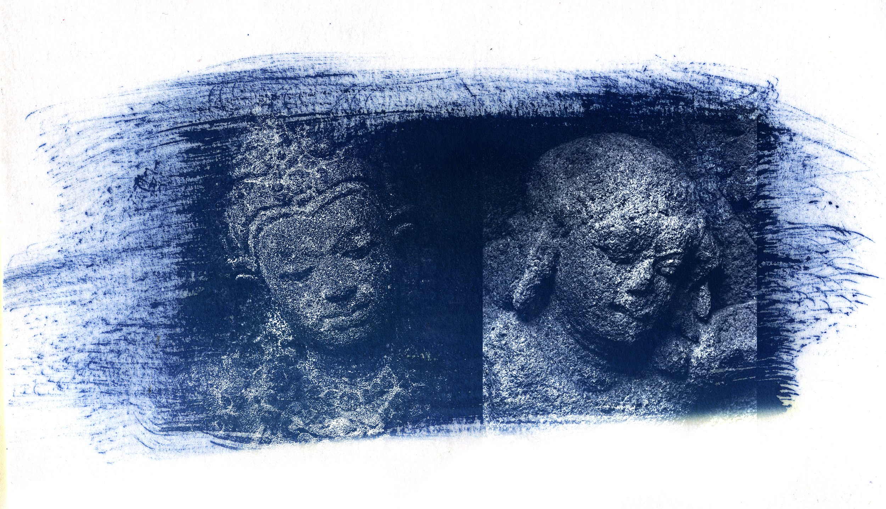
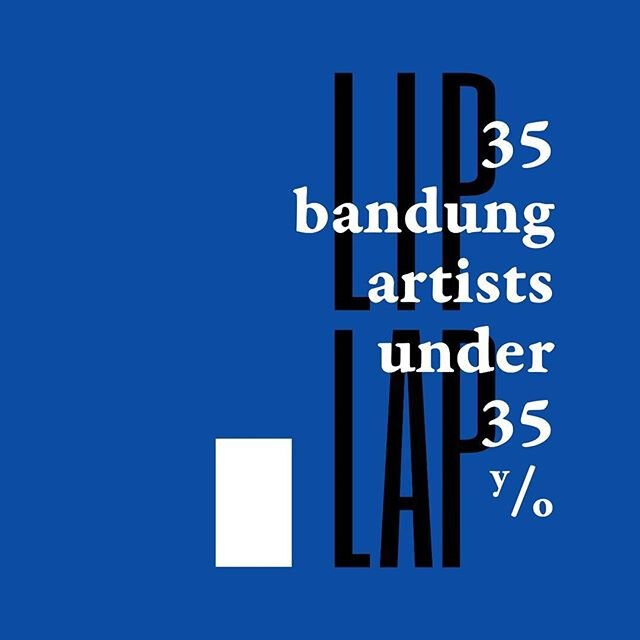
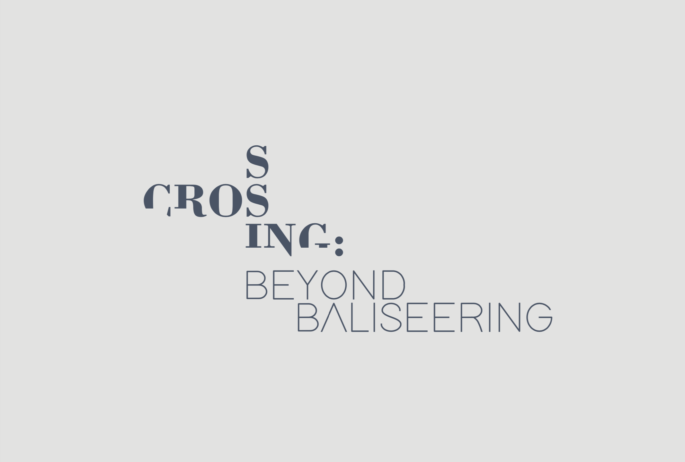

Two Faces by Irwandi Ibrahim was exhibited as part of a group exhibition at The 5th Pulau Ketam International Art Festival 2025 in Malaysia.
The work immediately drew my attention for its quiet yet insistent meditation on image-making as a temporal, material, and cultural act. Composed using cyanotype—a nineteenth-century photographic process—Two Faces resists the immediacy and frictionless reproducibility that characterise much of today’s digital imagery. Instead, it foregrounds slowness, touch, and the physical conditions of production.
Visually, the work is structured as a diptych-like composition: two stone faces drawn from temple reliefs, positioned side by side and separated by a subtle vertical division. This division does not merely separate; it establishes a dialogue, firmly grounded in Indonesian historical and cultural memory. The figures appear related but not identical, suggesting difference within continuity—between past and present, self and other, memory and perception. Their downward gazes evoke introspection rather than monumentality, transforming the reliefs from historical artefacts into contemplative presences.
The cyanotype’s deep, light-sensitive blue operates not only as a chromatic choice but as a conceptual one. Blue functions here as atmosphere, residue, and duration. Visible brushstrokes and uneven pigment density assert the artist’s hand and the labour embedded in the image. These material traces disrupt the illusion of photographic neutrality, situating the work in a hybrid space between photography, printmaking, and painting. Each print bears subtle variations, reinforcing the idea that repetition does not equate to sameness.
Through the incorporation of temple relief imagery, Irwandi engages Indonesia’s cultural and civilisational memory without resorting to ethnographic distance or archival fixation. The reliefs are not presented as static symbols of heritage, but as living surfaces—eroded, textured, and responsive to light. History here is not retrieved intact; it is re-encountered, mediated through process and subjectivity.
Crucially, Two Faces operates in dialogue with the present moment. In a visual landscape increasingly dominated by AI-generated imagery—marked by speed, polish, and infinite replication—the work insists on the value of imperfection, opacity, and time. It asks the viewer to slow down, to remain with the image long enough for its subtleties to unfold. Meaning is not delivered instantly; it accumulates through attention.
As a curatorial object, Two Faces holds tension rather than resolution. It neither claims nostalgia for the past nor rejects technological progress. Instead, it occupies a reflective middle ground, proposing that the future of images may still depend on material engagement, historical awareness, and the presence of the human hand.
In this sense, the work is not only an image but an argument: that memory, process, and cultural continuity remain vital—perhaps especially—within an era of accelerated visual production. Two Facesstands as a reminder that some images are not meant to be consumed quickly, but lived with, returned to, and remembered.
Konfir Kabo, Collector
15 December 2025

Project Eleven is proud to have sponsored the publication of the book 'Liplap: 35 Bandung Artists Under 35', organised by artists collectives Gerilya and Omnispace. The book features the artistic practices of 35 young artists currently active in the Bandung art world. The artists were chosen by their own peers, in a unique ranking system informed not by aesthetic judgments of their work but by their holistic contribution and activity. It is our hope that the book will become a useful reference and introduction to the Bandung art world.

E-catalogue for #Perempuan exhibition, 2018.

E-catalogue for Crossing: Beyond Baliseering exhibition, 2017.